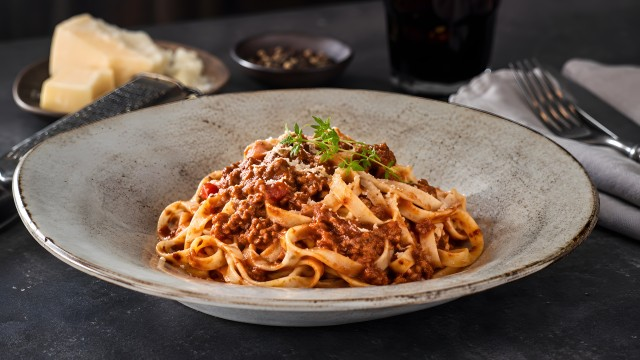

Home
Ragù alla bolognese

Description
Ragù alla bolognese is one of the most iconic pasta sauces from Italy: it can be eaten with tagliatelle
or just used to make the lasagna.
Its preparation is quite simple and requires ingredients that can be found everywhere, the only thing it really
takes is time and patience. Like always good quality ingredients are crucial.
Ingredients (for 4 people)
- 400-600 g of minced meat, 1/3 pork and 2/3 beef
- 1-2 onions, 1-2 carrots and 1-2 celery stalks (it should be equal proportions)
- 200 g of tomato puree
- Some vegetable broth
- Half a glass of white wine
- Extra virgin olive oil
- Some milk if needed in the end
Steps
-
Chop all the vegetables into small pieces, the smaller the better (better by hand, but if you really want
to use an electric chopper, make sure that you don't reduce them into a paste).
- Put some extra virgin olive oil into a pot (ideally thick-bottomed) and sweat the vegetables slowly.
- After 5-10 minutes (pay attention not to burn the onion!) add the meat and turn up the heat.
- The meat will release some water, wait that it completely goes away.
-
When the water will be gone and the temperature into the pot will again start to raise, add the wine and
let the alcohol go away.
- At this point add the tomato puree and a bit of broth (you can also just add water if you don't have).
- Cover the pot and let it cook with the minimum heat possible for at least 2-3 hours. Add broth if necessary.
-
If you were thinking that you can cook the sauce for only 20 minutes, just go to the supermarket and buy
bolognese sauce into the can!
-
Into the last half hour of cooking, add salt and pepper, and make sure that the sauce thickens as you desire,
adjusting the fire as needed.
- You can also adjust the acidity of the sauce by adding in small steps a bit of milk. Just don't exagerate!
-
And voilà, your sauce is ready to be added to some nice tagliatelle (don't use spaghetti, please),
or to a lasagna!
"Tagliatelle Bolognese with Parmesan in a bowl"
by Marco Verch is licensed under
CC-BY 2.0